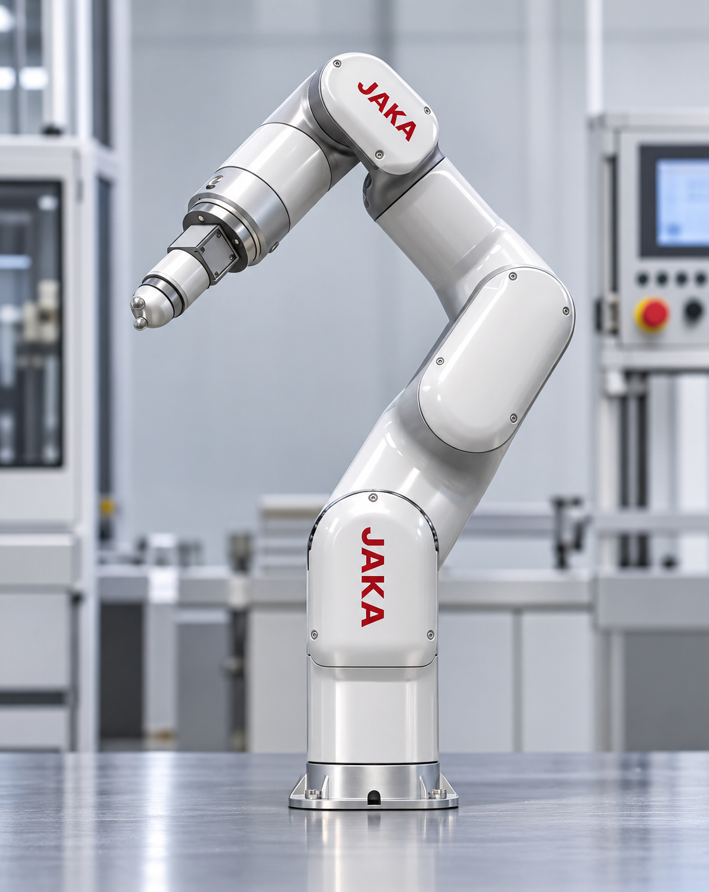

STEP 01
识别手臂
相机采集图像，模型判断左右手和手臂范围。中期材料记录的左右手识别准确率约为75%—80%。
它要先看见手臂，再找到穴位、规划路线，最后让按摩头平稳接触。我们用项目中的真实设计图和仿真过程，拆开这四步。

了解机器人如何把穴位位置转换成坐标、把推拿动作转换成机械臂轨迹，并判断哪些成果已经验证、哪些仍需真实样机与人体测试。
项目先调查推拿需求、现有设备体验和安全顾虑，再据此确定机械臂应优先解决的问题。
204份问卷采用网络便利抽样，于2026年3月9日集中回收。年龄和身份以青年、学生及健康相关从业者为主，适合描述本次样本，不代表全国公众。
安全、力度和定位均被受访者高度关注。因此项目把相对坐标、分级力度、缓冲结构和安全停止作为展示重点，而不是只追求动作数量。
机器人不会凭记忆直接戳向人体。它需要把视觉、坐标、路径和接触控制逐层连接起来。
相机采集图像，模型判断左右手和手臂范围。中期材料记录的左右手识别准确率约为75%—80%。
以腕横纹为基准，把腕宽和前臂长度转换成相对坐标，使目标点能够适应不同手臂尺寸。
六自由度机械臂从基座出发，在目标点上方增加抬升位置，并用平滑曲线减少启停冲击。
按摩头结合旋转、振动、缓冲和压力传感的设想，需要在真实样机上继续验证。
拖动腕宽和前臂长度，三个目标点会按同一套比例移动。这个交互解释相对坐标，不代表视觉模型已达到医疗级精度。
前半部分展示项目材料中的结构设计稿，后半部分补入3D打印样品、局部细节和两种按摩头的装配成品照片。
以下照片补充展示打印样品、结构细节，以及两种按摩头装到样机上的实际形态。照片用于记录制作进展，不等同于人体测试。
预览直接使用 robotarm2 的六个关节、七个 STL 网格和 MATLAB 逆运动学轨迹，可切换指压、指揉与指振。
项目原有的三维展示视频，用于解释各部件之间的空间关系。它不是整机联调或人体实验视频。
直接读取项目的 URDF 和7个 STL 网格，按摩头使用 link_06 的真实几何。画面同步展示逆运动学、前臂曲面、接触压缩和法向力估计。
法向力和摩擦采用可解释的简化模型，软组织压缩按设计刚度换算。曲线用于比较不同按摩节拍，不是人体实测数据。
科普展示同样需要说明证据边界。项目已有结构设计、视觉识别初步结果、路径仿真和调查报告，完整整机联调与人体实验尚未完成。
204份《中医推拿与智能按摩设备认知调查》原始问卷与正式分析报告。
内关、孔最、曲池三个手臂目标点及相对坐标定位方法。
四版按摩头结构设计、50 N静应力分析、3D打印样品及两种按摩头装配成品照片。
六自由度机械臂URDF、MoveIt配置、MATLAB三点运动与路径示意图。
完整相机标定、真实穴位定位精度和不同肤色、体型条件的测试。
机械臂与按摩头安装后的整机联动、力控闭环和安全急停测试。
人体皮肤接触、舒适度、耐久性与专业机构评价。
两种按摩头安装到完整机械臂后的联动测试、耐久验证和旋转展示视频。
项目材料中的路径规划与建模仿真截图，用于证明研发过程，不代表完成实机联调。
项目参加“机械创新，驱动未来”竞赛并获校级三等奖，材料用于展示阶段成果。
包含204份问卷的统计图表、调查局限、技术转化建议和照片补录页。
打开报告 PDF解释穴位坐标、五次多项式插值、三点运动路径和科普网页的使用方式。
打开仿真说明 PDF用腕横纹、腕宽和前臂长度作为基准，把穴位位置表示成随个体尺寸变化的比例。
已知按摩头需要到达的位置，反求六个机械臂关节应旋转到什么角度。
一种平滑轨迹函数，使机械臂启动和停止时的速度、加速度不发生突变。
按摩头垂直压向皮肤表面的力。当前页面中的数值是设计阶段估计，不是人体实测。
皮肤或缓冲结构被压缩单位距离时产生的反力大小，用于把按压力换算成压缩量。
切向摩擦力与法向力的比值，用来估计揉动时人体皮肤受到的切向负载。
网页帮助公众理解机械臂如何完成“看见—定位—移动—接触”，不提供诊断、治疗或个性化医疗建议。
完成前六个部分后，试着判断哪些是已完成成果，哪些只是计算或概念设计。